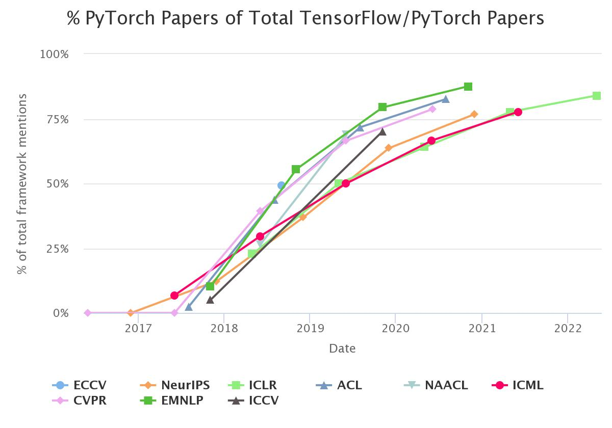
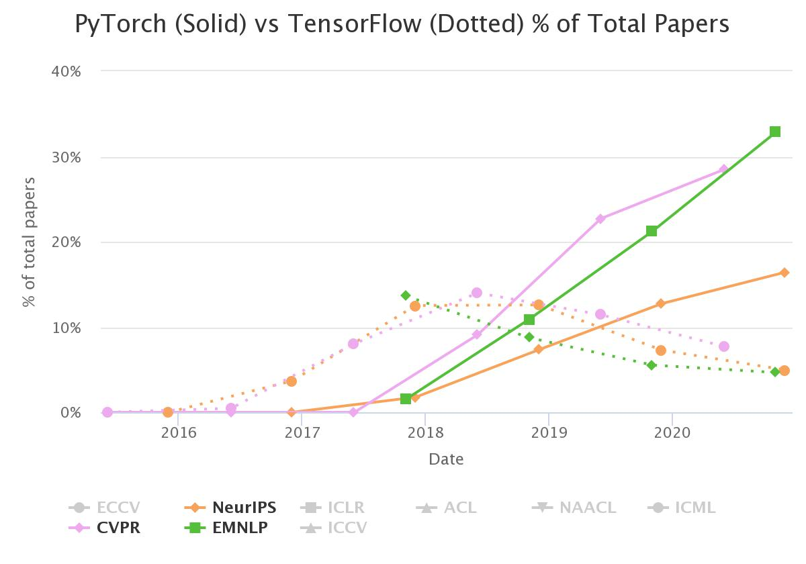

1.1 PyTorch 初认识
一句话认识PyTorch
“An open source machine learning framework that accelerates the path from research prototyping to production deployment.” ——选自 https://pytorch.org/
PyTorch是一个帮助大家加速算法模型研究到产品部署的开源机器学习框架。
PyTorch历史
FAIR（ Facebook AI Research，Facebook人工智能研究院 ）于2017年初发布PyTorch，PyTorch的命名可以拆为Py（Python）与Torch。Py就是python语言，Torch是一款早期的深度学习框架，所以PyTorch是在Torch基础上用python语言重新打造的一款深度学习框架。
那么什么是Torch呢？Torch是纽约大学在2002年开发的深度学习框架。Torch虽然很好用，但是它采用了一门较为小众的语言——Lua语言作为接口。这明显地增高了Torch的使用门槛，想要使用Torch必须学习一门新的编程语言，这让大家都望而却步。
好在Torch的幕后团队也意识到这一点，于是团队采用python语言作为接口对Torch进行了重构，于是就有了PyTorch。
PyTorch代码最早公开可追溯到2016年8月24日的v0.1.1（https://github.com/pytorch/pytorch/tags?after=v0.1.4）
随后
•2017年1月正式发布PyTorch
•2018年4月更新0.4.0版，支持Windows系统
•2018年11月更新1.0稳定版，已GitHub 增长第二快的开源项目
......
对PyTorch版本的更新感兴趣的朋友，可以关注 PyTorch-Tags，这里是最权威版本更新信息来源，要比官方文档还要快。
PyTorch必备网站
要熟悉PyTorch，不得不熟悉PyTorch的一些官方网站，以及这些网站的使用。下面列举几个实用的PyTorch网站。
官网 https://pytorch.org/
官网包含权威的PyTorch介绍、PyTorch官方文档、生态资源等信息。例如Get Started中，可以获取权威的安装信息。例如，特定版本下，windows系统，所支持的CUDA版本是多少，这点非常关键，往往GPU用不起来，就是CUDA版本不匹配。

除了最新稳定版，还可以下载历史版本的whl文件，进行离线安装（网速不好的朋友，建议手动下载whl，然后进行安装）。历史版本whl的在哪那里下载呢？ 是需要挖掘的，网址在上图的windows系统、Pip安装、Python、CUDA条件下才会出现，它是：https://download.pytorch.org/whl，点击torch，就可以发现所有历史版本都在这里可以找到，并且命名都有良好的规范，这里不过多介绍，在安装部分再详细讲解。
除了Get Started栏目，其它栏目也是很好的学习资料。
- Ecosystem：PyTorch生态系统资源库，里面收录生态系统内的资源，也欢迎大家加入并贡献资源，里边有CV数据增强开源库——albumentations、FB的目标检测和分割算法库——detectron2、优秀的部署平台——onnxruntime等等
- Mobile：移动端PyTorch实现方案及资源。
- Blog：PyTorch相关新闻。
- Tutorials：案例教程，这里面都是个人提供的、针对某一个应用的demo级的教程。包含如下方向，对于新手来说，可以看一下，了解个大概，但里面的代码多是demo，无法开箱即用于项目应用，这也是本书第二部分将会弥补的地方，敬请期待。

Docs：PyTorch API官方文档, 这也是我一直首推的学习资料，PyTorch的文档非常友好，可以查阅不同版本，各个API都有详细介绍，大多都有代码案例，PyTorch的基础部分主要从这里开始进行讲解。Docs下还会分PyTorch、torchvision、torchaudio、torchtext等，大家需要针对性的检索。
Resource：这里包含各种资源，如社区、新闻报道、论坛、ModelHub资源等等。
PyTorch发展趋势
为什么要学PyTorch？ 因为PyTorch发展迅猛，已经在多方面荣登深度学习框架第一的宝座，学术界绝大多数论文都有PyTorch实现，想要紧跟技术，利用新模型进行科学研究，进行项目开发的，不得不跟随学术界的趋势，所以可以看到PyTorch席卷各界。
PyTorch称王，TensorFlow答应么？一起来看看几个数据。
图1： 各大顶会期刊中，使用PyTorch的论文数量占PyTorch+TensorFlow的百分比。其实就是 p / (p+t)，这里有一个分界点就是50%，当达到50%时，说明PyTorch与TensorFlow平分秋色，当大于50%时说明PyTorch已经超过TF，而当数据超过75%，表明PyTorch已经是TF的两倍。从这个趋势可以发现转折点在2018-2019年之间发生，现在已经2021年末了，哪个框架是学术界的带头大哥？

图2：这幅图对比的是PyTorch与TF的决定数量，可以看到TF的份额被PyTorch一步步蚕食，实线代表的PyTorch持续上扬，TF的虚线不断下探。

图片出自：https://horace.io/pytorch-vs-tensorflow/
通过学术界的论文情况就可以说明PyTorch是未来的大势所趋，虽然说早期PyTorch在工业部署上并不如TensorFlow，但是如今PyTorch推出了libtorch，TorchServe，以及各类优秀的，适配性良好的部署框架层出不穷，如TensorRT、OpenVINO、ONNX等，都可以帮助PyTorch进行快速部署
感觉PyTorch是得学术界得天下，先让科研工作者用爽了，新模型都是PyTorch实现的，工业界的朋友总不能不用最新的算法、模型吧，只能纷纷转向PyTorch了。因此，相信大家选择使用PyTorch进行深度学习、机器学习模型开发，一定能加速你的算法模型开发，也印证了PyTorch的主旨——“An open source machine learning framework that accelerates the path from research prototyping to production deployment.”